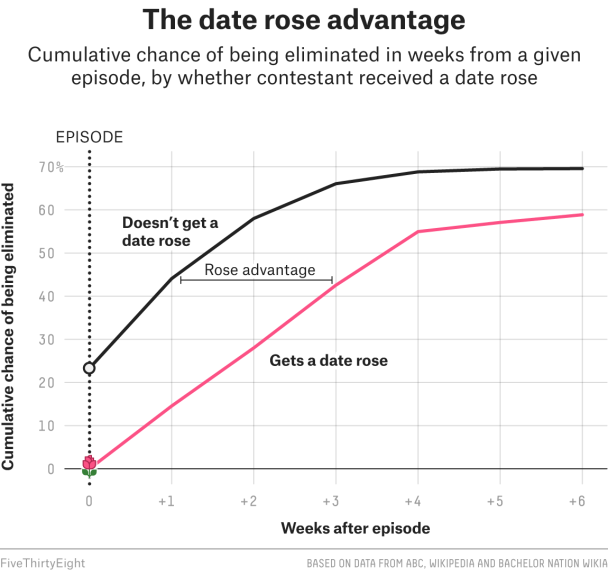
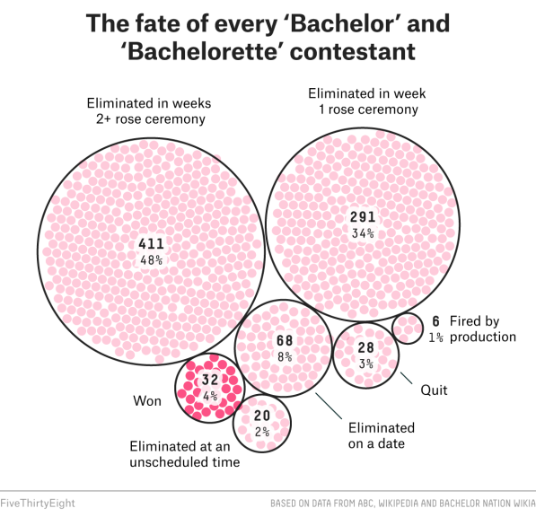
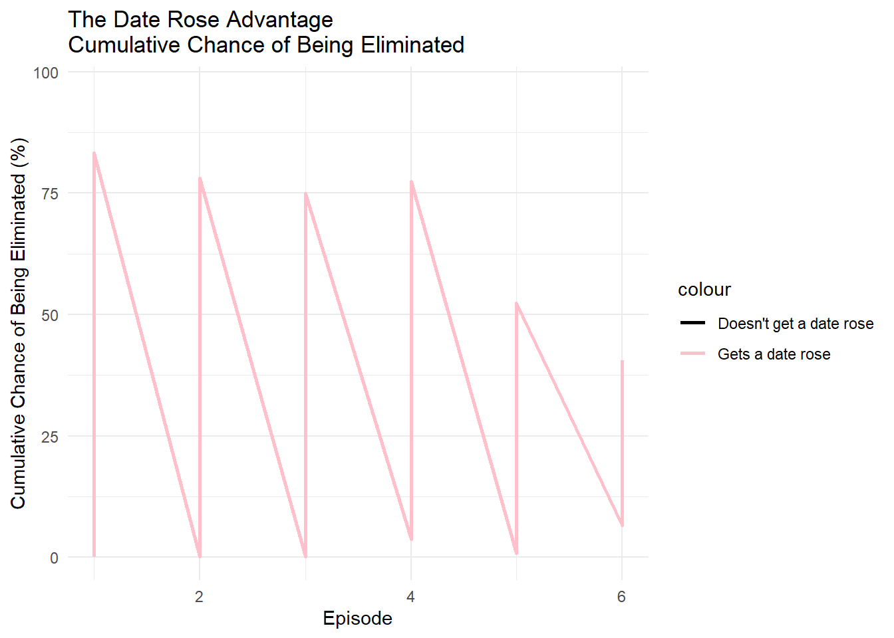
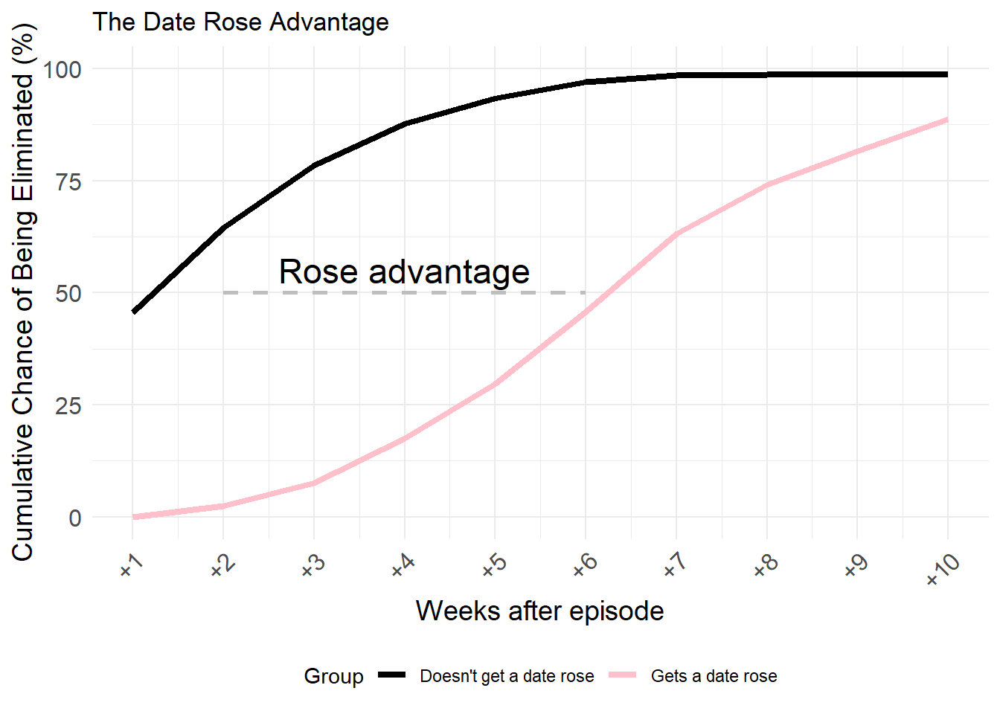
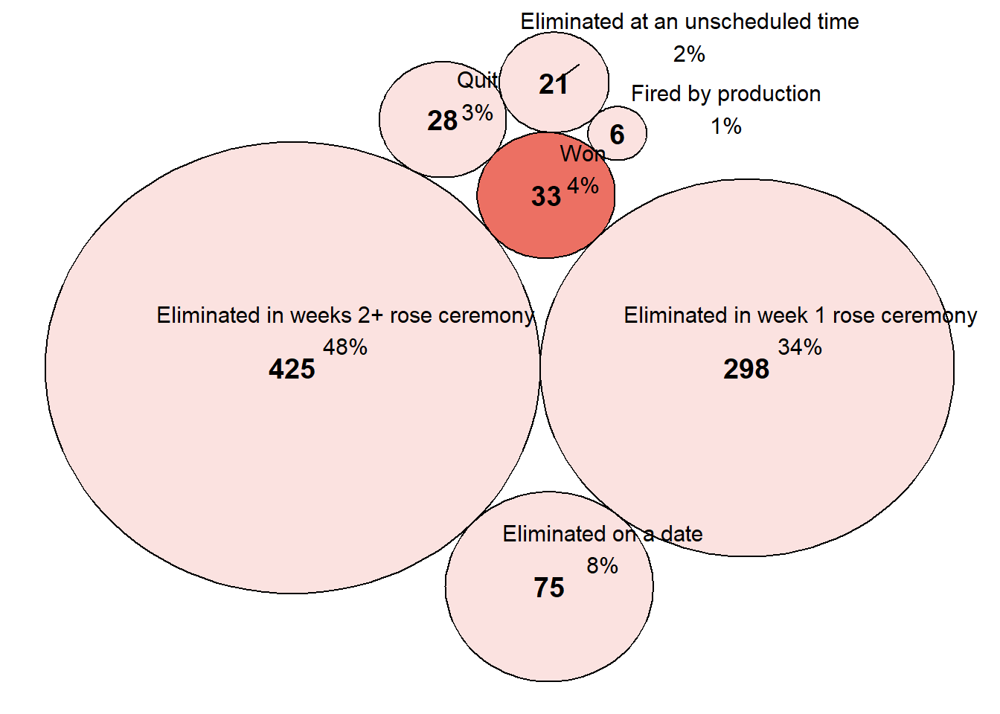
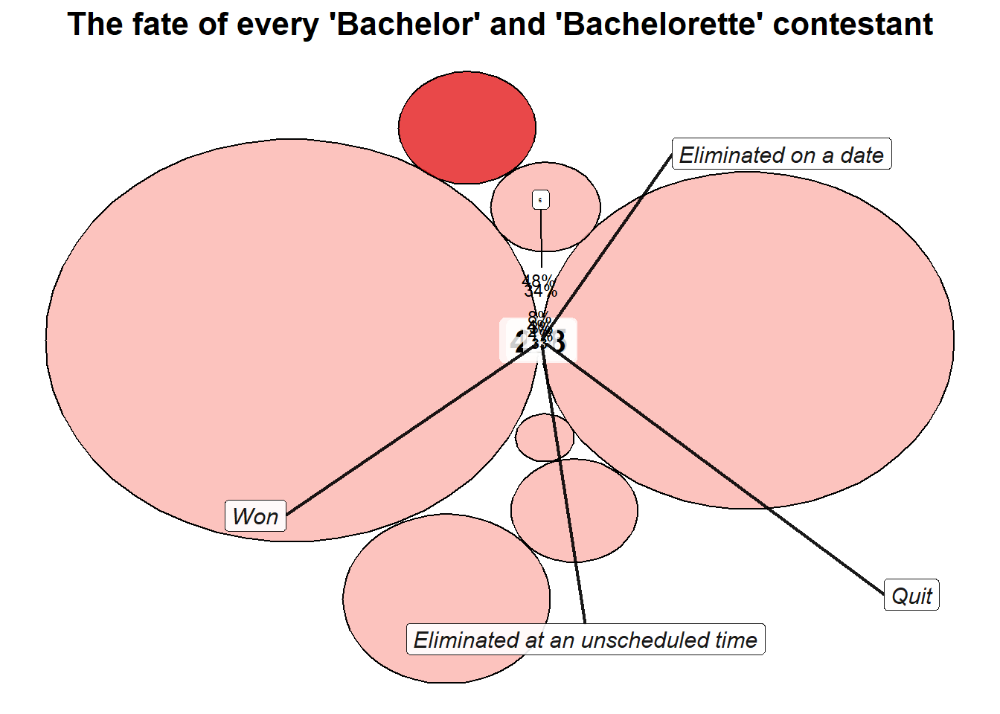
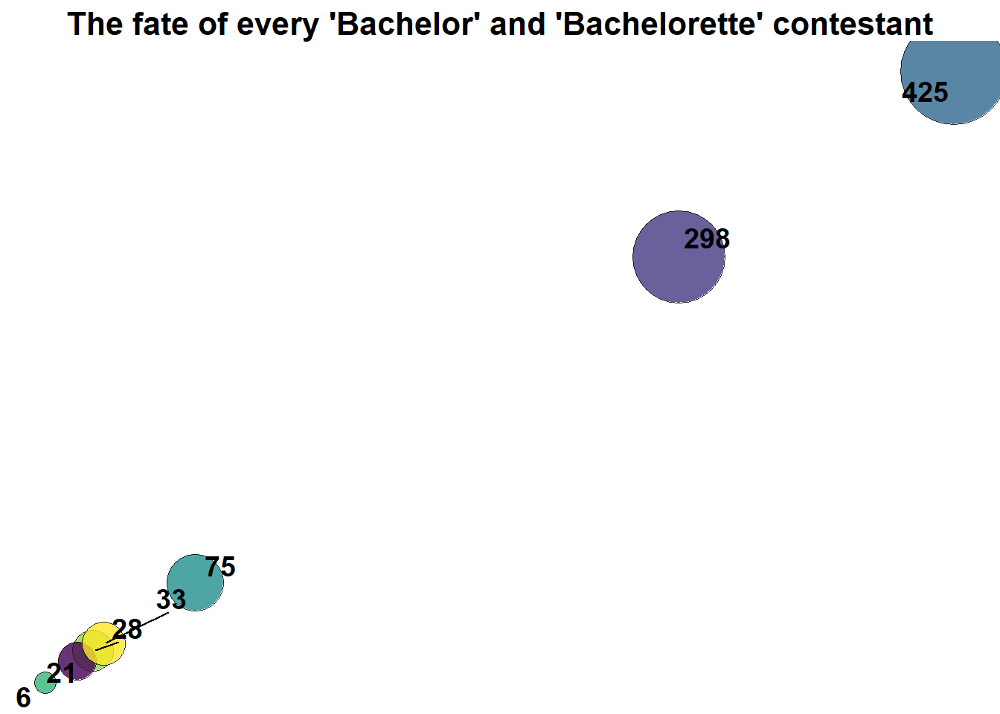

#install.packages("ggforce")
#install.packages("packcircles")
#install.packages("ggrepel")
#install.packages("viridis")
#install.packages("kableExtra")Presentation-exercise
Presentation Exercise - Bachelor and Bachelorette graphs
I will be attempting to recreate graphs from an article published by fivethirtyeight.com about contestants in the television shows, The Bachelor and Bachelorette. The article and data demonstrates a pattern between roses that are received in the early stages of the show and the performance of a candidate overall. The data evaluates all 33 seasons of the show.
The article may be found here: https://fivethirtyeight.com/features/the-bachelorette/
The raw data may be found here: https://github.com/fivethirtyeight/data/tree/master/bachelorette
Disclaimer: I do not know anything about this show and have not watched any episodes, so forgive me if my explanations are not entirely on point. I chose this article because the graphs and topic seemed fun and light-hearted amongst all the political content.
Processing of the data:
First I will load all of the required packages and well as read the raw data CSV file:
library("ggplot2")
library("tidyverse")Warning: package 'tidyverse' was built under R version 4.4.2Warning: package 'readr' was built under R version 4.4.2── Attaching core tidyverse packages ──────────────────────── tidyverse 2.0.0 ──
✔ dplyr 1.1.4 ✔ readr 2.1.5
✔ forcats 1.0.0 ✔ stringr 1.5.1
✔ lubridate 1.9.3 ✔ tibble 3.2.1
✔ purrr 1.0.2 ✔ tidyr 1.3.1
── Conflicts ────────────────────────────────────────── tidyverse_conflicts() ──
✖ dplyr::filter() masks stats::filter()
✖ dplyr::lag() masks stats::lag()
ℹ Use the conflicted package (<http://conflicted.r-lib.org/>) to force all conflicts to become errorslibrary("knitr")
library("dplyr")
library("readr")
library("ggforce")Warning: package 'ggforce' was built under R version 4.4.2library("packcircles")Warning: package 'packcircles' was built under R version 4.4.2library("ggrepel")Warning: package 'ggrepel' was built under R version 4.4.2library("viridis")Warning: package 'viridis' was built under R version 4.4.2Loading required package: viridisLitelibrary("kableExtra")Warning: package 'kableExtra' was built under R version 4.4.2
Attaching package: 'kableExtra'
The following object is masked from 'package:dplyr':
group_rowsbachelorette_data <- read_csv(here::here(
"presentation-exercise/bachelorette.csv"))Rows: 920 Columns: 23
── Column specification ────────────────────────────────────────────────────────
Delimiter: ","
chr (23): SHOW, SEASON, CONTESTANT, ELIMINATION-1, ELIMINATION-2, ELIMINATIO...
ℹ Use `spec()` to retrieve the full column specification for this data.
ℹ Specify the column types or set `show_col_types = FALSE` to quiet this message.summary(bachelorette_data) SHOW SEASON CONTESTANT ELIMINATION-1
Length:920 Length:920 Length:920 Length:920
Class :character Class :character Class :character Class :character
Mode :character Mode :character Mode :character Mode :character
ELIMINATION-2 ELIMINATION-3 ELIMINATION-4 ELIMINATION-5
Length:920 Length:920 Length:920 Length:920
Class :character Class :character Class :character Class :character
Mode :character Mode :character Mode :character Mode :character
ELIMINATION-6 ELIMINATION-7 ELIMINATION-8 ELIMINATION-9
Length:920 Length:920 Length:920 Length:920
Class :character Class :character Class :character Class :character
Mode :character Mode :character Mode :character Mode :character
ELIMINATION-10 DATES-1 DATES-2 DATES-3
Length:920 Length:920 Length:920 Length:920
Class :character Class :character Class :character Class :character
Mode :character Mode :character Mode :character Mode :character
DATES-4 DATES-5 DATES-6 DATES-7
Length:920 Length:920 Length:920 Length:920
Class :character Class :character Class :character Class :character
Mode :character Mode :character Mode :character Mode :character
DATES-8 DATES-9 DATES-10
Length:920 Length:920 Length:920
Class :character Class :character Class :character
Mode :character Mode :character Mode :character Perform some formating of the data to remove the first row which is a repetition of headings and to change the seasons to numeric values. We are also removing rows where headings are repeated within the data:
# Remove the incorrect header row if necessary
bachelorette_data <- bachelorette_data[-1, ] # Remove first row if it's incorrect
# Convert SEASON to numeric
bachelorette_data$SEASON <- as.numeric(bachelorette_data$SEASON)Warning: NAs introduced by coercion# Remove rows where the CONTESTANT column contains "ID"
bachelorette_data <- bachelorette_data %>%
filter(CONTESTANT != "ID")
# Reset row indices (optional)
bachelorette_data <- bachelorette_data %>% mutate(row_id = row_number())
# Display the cleaned data
print(head(bachelorette_data))# A tibble: 6 × 24
SHOW SEASON CONTESTANT `ELIMINATION-1` `ELIMINATION-2` `ELIMINATION-3`
<chr> <dbl> <chr> <chr> <chr> <chr>
1 Bachelorette 13 13_BRYAN_A R1 <NA> <NA>
2 Bachelorette 13 13_PETER_K <NA> R <NA>
3 Bachelorette 13 13_ERIC_B <NA> <NA> R
4 Bachelorette 13 13_DEAN_U <NA> R <NA>
5 Bachelorette 13 13_ADAM_G <NA> <NA> <NA>
6 Bachelorette 13 13_MATT_M <NA> <NA> <NA>
# ℹ 18 more variables: `ELIMINATION-4` <chr>, `ELIMINATION-5` <chr>,
# `ELIMINATION-6` <chr>, `ELIMINATION-7` <chr>, `ELIMINATION-8` <chr>,
# `ELIMINATION-9` <chr>, `ELIMINATION-10` <chr>, `DATES-1` <chr>,
# `DATES-2` <chr>, `DATES-3` <chr>, `DATES-4` <chr>, `DATES-5` <chr>,
# `DATES-6` <chr>, `DATES-7` <chr>, `DATES-8` <chr>, `DATES-9` <chr>,
# `DATES-10` <chr>, row_id <int>Some information was provided on the website with the raw data which may help with interpretation of this data:
#Adding additional data into a table
column_names <- c("Header", "Description")
table_data <- data.frame(
Header = c(
"SHOW", "SEASON", "CONTESTANT", "ELIMINATION-1", "ELIMINATION-2",
"ELIMINATION-3", "ELIMINATION-4", "ELIMINATION-5", "ELIMINATION-6",
"ELIMINATION-7", "ELIMINATION-8", "ELIMINATION-9", "ELIMINATION-10",
"DATES-1", "DATES-2", "DATES-3", "DATES-4", "DATES-5", "DATES-6",
"DATES-7", "DATES-8", "DATES-9", "DATES-10"
),
Description = c(
"Bachelor or Bachelorette", "Which season", "An identifier for the contestant in a given season",
"Who was eliminated in week 1", "Who was eliminated in week 2", "Who was eliminated in week 3",
"Who was eliminated in week 4", "Who was eliminated in week 5", "Who was eliminated in week 6",
"Who was eliminated in week 7", "Who was eliminated in week 8", "Who was eliminated in week 9",
"Who was eliminated in week 10", "Who was on which date in week 1", "Who was on which date in week 2",
"Who was on which date in week 3", "Who was on which date in week 4", "Who was on which date in week 5",
"Who was on which date in week 6", "Who was on which date in week 7", "Who was on which date in week 8",
"Who was on which date in week 9", "Who was on which date in week 10"
)
)
# Print table using kable for better formatting
knitr::kable(table_data, col.names = column_names, caption = "Table of Data Headers and Descriptions")| Header | Description |
|---|---|
| SHOW | Bachelor or Bachelorette |
| SEASON | Which season |
| CONTESTANT | An identifier for the contestant in a given season |
| ELIMINATION-1 | Who was eliminated in week 1 |
| ELIMINATION-2 | Who was eliminated in week 2 |
| ELIMINATION-3 | Who was eliminated in week 3 |
| ELIMINATION-4 | Who was eliminated in week 4 |
| ELIMINATION-5 | Who was eliminated in week 5 |
| ELIMINATION-6 | Who was eliminated in week 6 |
| ELIMINATION-7 | Who was eliminated in week 7 |
| ELIMINATION-8 | Who was eliminated in week 8 |
| ELIMINATION-9 | Who was eliminated in week 9 |
| ELIMINATION-10 | Who was eliminated in week 10 |
| DATES-1 | Who was on which date in week 1 |
| DATES-2 | Who was on which date in week 2 |
| DATES-3 | Who was on which date in week 3 |
| DATES-4 | Who was on which date in week 4 |
| DATES-5 | Who was on which date in week 5 |
| DATES-6 | Who was on which date in week 6 |
| DATES-7 | Who was on which date in week 7 |
| DATES-8 | Who was on which date in week 8 |
| DATES-9 | Who was on which date in week 9 |
| DATES-10 | Who was on which date in week 10 |
Further information required for interpretation and processing:
Eliminates connote either an elimination (starts with “E”) or a rose (starts with “R”). Eliminations supercede roses. “E” connotes a standard elimination, typically at a rose ceremony. “EQ” means the contestant quits. “EF” means the contestant was fired by production. “ED” connotes a date elimination. “EU” connotes an unscheduled elimination, one that takes place at a time outside of a date or rose ceremony. “R” means the contestant received a rose. “R1” means the contestant got a first impression rose. “D1” means a one-on-one date, “D2” means a 2-on-1, “D3” means a 3-on-1 group date, and so on. “W” in E10 indicates that the contestant won. Weeks of the show are deliminated by rose ceremonies, and may not line up exactly with episodes.
………………….
I will be using ChatGPT to help me to generate the code that will help to obtain the graph that I want. I will post my prompts and the outcome as well as the different iterations below.
We are not getting the correct number of winners
# Get all ELIMINATION columns
elim_columns <- grep("ELIMINATION-", names(bachelorette_data), value = TRUE)
# Count occurrences of "W" in each ELIMINATION column
w_counts <- sapply(elim_columns, function(col) sum(bachelorette_data[[col]] == "W", na.rm = TRUE))
# Print counts for each column
print("Number of 'W' occurrences per ELIMINATION column:")[1] "Number of 'W' occurrences per ELIMINATION column:"print(w_counts) ELIMINATION-1 ELIMINATION-2 ELIMINATION-3 ELIMINATION-4 ELIMINATION-5
0 0 0 0 0
ELIMINATION-6 ELIMINATION-7 ELIMINATION-8 ELIMINATION-9 ELIMINATION-10
2 8 7 1 15 # Total winners found in dataset
total_winners <- sum(w_counts)
print(paste("Total expected winners:", total_winners))[1] "Total expected winners: 33"Now we found that it seems that winners were marked in different levels of the competition (Elimination 6 - 10 and not just the last two). We will run this again:
# Define function to classify contestants, now checking ELIMINATION-6 to ELIMINATION-10
classify_contestant <- function(row) {
elim_columns <- grep("ELIMINATION-", names(row), value = TRUE)
# **Ensure all ELIMINATION columns are checked for "W"**
w_found <- any(sapply(elim_columns, function(col) toupper(trimws(row[[col]])) == "W"), na.rm = TRUE)
# **First, Check for Winners** - If "W" appears in ELIMINATION-6 through ELIMINATION-10, classify as "Won"
if (w_found) {
return("Won")
}
# **Next, Track First Elimination Event**
for (col in elim_columns) {
value <- ifelse(is.na(row[[col]]), "", toupper(trimws(as.character(row[[col]])))) # Handle NA values
if (grepl("^E", value)) { # Any elimination starting with "E"
if (value == "E" && col == "ELIMINATION-1") {
return("Eliminated in week 1 rose ceremony")
} else if (value == "E") {
return("Eliminated in weeks 2+ rose ceremony")
} else if (value == "EQ") {
return("Quit")
} else if (value == "EF") {
return("Fired by production")
} else if (value == "ED") {
return("Eliminated on a date")
} else if (value == "EU") {
return("Eliminated at an unscheduled time")
}
}
}
return(NA) # Avoid misclassification
}
# Apply classification to dataset using `pick()`
bachelorette_data <- bachelorette_data %>%
rowwise() %>%
mutate(Category = classify_contestant(pick(everything()))) %>%
ungroup()
# Remove NA rows (contestants who do not fit a category)
bachelorette_data <- bachelorette_data %>% filter(!is.na(Category))
# Count occurrences of each category
category_counts <- bachelorette_data %>%
group_by(Category) %>%
summarise(Count = n()) %>%
arrange(desc(Count))
# Print corrected category counts
print(category_counts)# A tibble: 7 × 2
Category Count
<chr> <int>
1 Eliminated in weeks 2+ rose ceremony 425
2 Eliminated in week 1 rose ceremony 298
3 Eliminated on a date 75
4 Won 33
5 Quit 28
6 Eliminated at an unscheduled time 21
7 Fired by production 6# Display the updated category breakdown table using kable
knitr::kable(category_counts, col.names = c("Category", "Count"), caption = "Final Category Breakdown")| Category | Count |
|---|---|
| Eliminated in weeks 2+ rose ceremony | 425 |
| Eliminated in week 1 rose ceremony | 298 |
| Eliminated on a date | 75 |
| Won | 33 |
| Quit | 28 |
| Eliminated at an unscheduled time | 21 |
| Fired by production | 6 |
We have picked up an additonal winner than was in the original dataset (33 instead of 32), we will use this code to verify who they were so we can be confident with our analysis:
# Create a separate copy of the dataset (optional safety step)
bachelorette_winner_check <- bachelorette_data
# Identify all elimination columns
elim_columns <- grep("ELIMINATION-", names(bachelorette_winner_check), value = TRUE)
# Find contestants who have "W" in any elimination column
winners <- bachelorette_winner_check %>%
filter(if_any(all_of(elim_columns), ~ . == "W"))
# Select relevant columns: SHOW, SEASON, CONTESTANT, and elimination columns where "W" appeared
winner_columns <- c("SHOW", "SEASON", "CONTESTANT", elim_columns)
winners <- winners %>% select(all_of(winner_columns))
# Print the identified winners
print(winners)# A tibble: 33 × 13
SHOW SEASON CONTESTANT `ELIMINATION-1` `ELIMINATION-2` `ELIMINATION-3`
<chr> <dbl> <chr> <chr> <chr> <chr>
1 Bacheloret… 13 13_BRYAN_A R1 <NA> <NA>
2 Bacheloret… 12 12_JORDAN… R1 <NA> <NA>
3 Bacheloret… 11 11_SHAWN_B R1 <NA> R
4 Bacheloret… 10 10_JOSH_M <NA> <NA> R
5 Bacheloret… 9 09_CHRIS_S <NA> <NA> R
6 Bacheloret… 8 08_JEF_H <NA> R <NA>
7 Bacheloret… 7 07_JP_R <NA> <NA> R
8 Bacheloret… 6 06_ROBERT… R1 <NA> R
9 Bacheloret… 5 05_ED_S <NA> <NA> R
10 Bacheloret… 4 04_JESSE_C R1 <NA> <NA>
# ℹ 23 more rows
# ℹ 7 more variables: `ELIMINATION-4` <chr>, `ELIMINATION-5` <chr>,
# `ELIMINATION-6` <chr>, `ELIMINATION-7` <chr>, `ELIMINATION-8` <chr>,
# `ELIMINATION-9` <chr>, `ELIMINATION-10` <chr>We have higher numbers in the other categories too, but we will assume that this is because the raw data has an additional season which was not included in the published graphs.
# Count the total number of unique seasons for each show (Bachelor/Bachelorette)
season_counts <- bachelorette_data %>%
group_by(SHOW) %>%
summarise(Total_Seasons = n_distinct(SEASON)) %>%
arrange(desc(Total_Seasons)) # Sort by number of seasons
# Print the season counts
print(season_counts)# A tibble: 2 × 2
SHOW Total_Seasons
<chr> <int>
1 Bachelor 21
2 Bachelorette 13# Display the table using kable
knitr::kable(season_counts, col.names = c("Show", "Total Seasons"),
caption = "Total Number of Seasons by Show")| Show | Total Seasons |
|---|---|
| Bachelor | 21 |
| Bachelorette | 13 |
Their data indicated: Eliminated in weeks 2+ rose ceremony 411 Eliminated in week 1 rose ceremony 291 Won 32 Eliminated on a date 68 Eliminated at an unscheduled time 20 Quit 28 Fired by production 6
Our results are: Eliminated in weeks 2+ rose ceremony 425
Eliminated in week 1 rose ceremony 298
Won 33
Eliminated on a date 75
Eliminated at an unscheduled time 21
Quit 28
Fired by production 6
We want to get the percentage for each of the categories so that we can include these in the graphic.
# Calculate total number of contestants classified
total_contestants <- sum(category_counts$Count)
# Add percentage column, rounded to the nearest whole number
# Ensure category_counts has correctly formatted columns
category_counts <- category_counts %>%
rename(Count = Count) %>% # Ensure correct naming
mutate(Percentage = paste0(round((Count / sum(Count)) * 100, 0), "%")) # Add percentage column
#category_counts <- category_counts %>%
# mutate(Percentage = paste0(round((Count / sum(Count)) * 100, 0), "%")) # Calculate and format as "X%"
# Print updated table
print(category_counts)# A tibble: 7 × 3
Category Count Percentage
<chr> <int> <chr>
1 Eliminated in weeks 2+ rose ceremony 425 48%
2 Eliminated in week 1 rose ceremony 298 34%
3 Eliminated on a date 75 8%
4 Won 33 4%
5 Quit 28 3%
6 Eliminated at an unscheduled time 21 2%
7 Fired by production 6 1% # Display table using kable with percentages
knitr::kable(category_counts, col.names = c("Category", "Count", "Percentage (%)"),
caption = "Final Category Breakdown with Rounded Percentages")| Category | Count | Percentage (%) |
|---|---|---|
| Eliminated in weeks 2+ rose ceremony | 425 | 48% |
| Eliminated in week 1 rose ceremony | 298 | 34% |
| Eliminated on a date | 75 | 8% |
| Won | 33 | 4% |
| Quit | 28 | 3% |
| Eliminated at an unscheduled time | 21 | 2% |
| Fired by production | 6 | 1% |
# Extract rose-related events (e.g., R1, R, D1, etc.) from elimination columns
rose_columns <- grep("ELIMINATION-", names(bachelorette_data), value = TRUE)
# Function to check if a contestant received a rose in each episode
get_rose_status <- function(row) {
rose_events <- row[rose_columns]
return(ifelse(any(grepl("R", rose_events)), which(grepl("R", rose_events))[1], NA))
}
# Apply the function to get the first episode where each contestant received a rose
bachelorette_data$Rose_Episode <- apply(bachelorette_data, 1, get_rose_status)# Identify eliminations
eliminate_columns <- grep("ELIMINATION-", names(bachelorette_data), value = TRUE)
# Function to check elimination status (either eliminated or not)
get_elimination_status <- function(row) {
elimination_status <- row[eliminate_columns]
return(sum(grepl("E", elimination_status), na.rm = TRUE))
}
# Calculate the cumulative number of eliminations by episode
bachelorette_data$Eliminations <- apply(bachelorette_data, 1, get_elimination_status)
# Calculate total contestants
total_contestants <- nrow(bachelorette_data)
# Calculate cumulative eliminations
cumulative_elim <- cumsum(bachelorette_data$Eliminations)
# Calculate cumulative percent chance of elimination
bachelorette_data$Cumulative_Elim_Percent <- cumulative_elim / total_contestants * 100Recreating the Graph:
Here are the two original images that i tried to recreate, with the original graph looking at the effect of receiving a rose early on being eliminated:

The second graph (image) - see at the bottom of the document:

This is how we (ChatGPT and me) started with the recreation of this graph:
For my prompt I uploaded the image of the graph and asked it to analyse it. I then uploaded the raw dataset and asked if it could recreate the graph. It seemed to trace a similar graph but I think it might have just copied the image a bit. So I asked it to provide the R code and to provide steps to recreate it. I then received the first graph provided below which was not similar at all (as you can see).
I then explained what the variables on each axis were and I explained that there are two curves and what they are based upon. I then explained what we might be calculating and that it should include any data analysis steps that may be required. The results thereafter were much better and closer to the original and i weaked some of the smaller labels and things like that.
It was quite good at rendering a similar graph however our shape never quite reenacted the original data. Unfortunately, I am not sure how they performed this for clear comparison but the end result was somewhat similar. Given the issues that I picked uo with the data processing part I am not sure where the issue might be coming from.
library(ggplot2)
# Filter the data for contestants who received a rose and those who did not
rose_data <- bachelorette_data[!is.na(bachelorette_data$Rose_Episode), ]
no_rose_data <- bachelorette_data[is.na(bachelorette_data$Rose_Episode), ]
# Create the plot
ggplot() +
geom_line(data = rose_data, aes(x = Rose_Episode, y = Cumulative_Elim_Percent, color = "Gets a date rose"), size = 1) +
geom_line(data = no_rose_data, aes(x = Rose_Episode, y = Cumulative_Elim_Percent, color = "Doesn't get a date rose"), size = 1) +
labs(title = "The Date Rose Advantage\nCumulative Chance of Being Eliminated",
x = "Episode", y = "Cumulative Chance of Being Eliminated (%)") +
scale_color_manual(values = c("Gets a date rose" = "pink", "Doesn't get a date rose" = "black")) +
theme_minimal()Warning: Using `size` aesthetic for lines was deprecated in ggplot2 3.4.0.
ℹ Please use `linewidth` instead.Warning: Removed 674 rows containing missing values or values outside the scale range
(`geom_line()`).
Where we ended up after many back and forths and starting again to focus on the basic principles of the curve:
# Identify the columns for eliminations
elim_columns <- grep("ELIMINATION-", names(bachelorette_data), value = TRUE)
# Function to identify when a contestant received a rose
get_rose_episode <- function(row) {
for (i in seq_along(row[elim_columns])) {
if (grepl("R", row[elim_columns[i]])) {
return(i) # Episode number starts from 1
}
}
return(NA) # If no rose received, return NA
}
# Apply the function to the dataset to create a new column with the episode they received a rose
bachelorette_data$Rose_Episode <- apply(bachelorette_data, 1, get_rose_episode)
# Initialize empty lists to track eliminations for both groups (rose vs no-rose)
elim_counts_rose <- numeric(0)
elim_counts_no_rose <- numeric(0)
weeks_after_rose_rose <- numeric(0)
weeks_after_rose_no_rose <- numeric(0)
# Variables to store total eliminations for both groups
elim_rose <- 0
elim_no_rose <- 0
# Track eliminations and weeks after receiving the rose
for (i in 1:length(elim_columns)) {
# For eliminations in the current episode
eliminated_in_episode <- grepl("E", bachelorette_data[[elim_columns[i]]])
# For contestants who received a rose
eliminated_rose_group <- eliminated_in_episode & !is.na(bachelorette_data$Rose_Episode)
elim_rose <- elim_rose + sum(eliminated_rose_group)
elim_counts_rose <- c(elim_counts_rose, elim_rose / sum(!is.na(bachelorette_data$Rose_Episode)) * 100) # Percent eliminated from rose group
weeks_after_rose_rose <- c(weeks_after_rose_rose, i) # Track weeks after the rose
# For contestants who did not receive a rose
eliminated_no_rose_group <- eliminated_in_episode & is.na(bachelorette_data$Rose_Episode)
elim_no_rose <- elim_no_rose + sum(eliminated_no_rose_group)
elim_counts_no_rose <- c(elim_counts_no_rose, elim_no_rose / sum(is.na(bachelorette_data$Rose_Episode)) * 100) # Percent eliminated from no-rose group
weeks_after_rose_no_rose <- c(weeks_after_rose_no_rose, i) # Track weeks after the rose
}
# Create a combined dataset for plotting
elim_data <- data.frame(
Weeks_After_Rose = c(weeks_after_rose_rose, weeks_after_rose_no_rose),
Cumulative_Elim_Percent = c(elim_counts_rose, elim_counts_no_rose),
Group = rep(c("Gets a date rose", "Doesn't get a date rose"), each = length(elim_columns))
)
# Plot the graph
plot <- ggplot(elim_data, aes(x = Weeks_After_Rose, y = Cumulative_Elim_Percent, color = Group)) +
geom_line(size = 1.5) +
scale_color_manual(values = c("Gets a date rose" = "pink", "Doesn't get a date rose" = "black")) +
labs(title = "The Date Rose Advantage",
x = "Weeks after episode", y = "Cumulative Chance of Being Eliminated (%)") +
scale_x_continuous(breaks = seq(0, length(elim_columns), by = 1), labels = paste0("+", seq(0, length(elim_columns), by = 1))) +
theme_minimal() +
theme(legend.position = "bottom",
axis.text.x = element_text(angle = 45, hjust = 1, size = 12),
axis.text.y = element_text(size = 12),
axis.title.x = element_text(size = 14),
axis.title.y = element_text(size = 14)) +
ylim(0, 100) # Ensure y-axis is from 0 to 100%
# Add the shorter measurement line between the two curves (shifted to the left)
plot +
geom_segment(aes(x = 2, xend = 6, y = 50, yend = 50), color = "grey", linetype = "dashed", size = 1) + # Line from x = 2 to x = 6
# Add label for "Rose advantage"
annotate("text", x = 4, y = 55, label = "Rose advantage", size = 6, angle = 0, hjust = 0.5)Warning in geom_segment(aes(x = 2, xend = 6, y = 50, yend = 50), color = "grey", : All aesthetics have length 1, but the data has 20 rows.
ℹ Please consider using `annotate()` or provide this layer with data containing
a single row.
I do not know if the differences come from the original data or the approach in data anaylsis or the graph rendering.
Part 2: Creating a Table
There was no table to recreate so I decided to create one that looked at and ranked the number of roses that each winner received in their respective season.
I tried to fix my table to have the first two rows with bigger font and to have different colours but I could not get it right. ChatGPT could not help me and kept on giving me the same responses and I gave up with my editing. I will pick it up again sometime.
# Create a separate copy of the dataset
bachelorette_winner_check <- bachelorette_data
# Identify all elimination columns
elim_columns <- grep("ELIMINATION-", names(bachelorette_winner_check), value = TRUE)
# Find contestants who have "W" in any elimination column (winners)
winners <- bachelorette_winner_check %>%
filter(if_any(all_of(elim_columns), ~ . == "W"))
# Select relevant columns
winner_columns <- c("SHOW", "SEASON", "CONTESTANT", elim_columns)
winners <- winners %>% select(all_of(winner_columns))
# Identify the date columns (for checking the dates roses were given)
date_columns <- grep("DATES-", names(bachelorette_winner_check), value = TRUE)
# Function to count the number of roses each winner received
count_roses <- function(winner_row, date_columns, elim_columns) {
contestant <- as.character(winner_row$CONTESTANT)
date_roses <- sum(sapply(date_columns, function(col) {
sum(grepl(contestant, as.character(winner_row[[col]])), na.rm = TRUE)
}))
elim_roses <- sum(sapply(elim_columns, function(col) {
sum(grepl("R", as.character(winner_row[[col]])), na.rm = TRUE)
}))
return(date_roses + elim_roses)
}
# Create a data frame to store the winner and their respective rose counts
rose_counts <- data.frame(Winner = character(), Season = numeric(), Show_Type = character(),
Roses_Received = numeric(), Roses = character(), stringsAsFactors = FALSE)
# Loop over each winner and count the number of roses they received in their season
for (i in 1:nrow(winners)) {
winner_row <- winners[i, ]
rose_count <- count_roses(winner_row, date_columns, elim_columns)
winner_season <- as.character(winner_row$SEASON)
winner_show <- as.character(winner_row$SHOW)
cleaned_winner_name <- gsub("^\\d+_", "", winner_row$CONTESTANT)
rose_symbol <- paste(rep("🌹", rose_count), collapse = "") # Restored rose emoji 🌹
rose_counts <- rbind(rose_counts, data.frame(Winner = cleaned_winner_name,
Season = winner_season,
Show_Type = winner_show,
Roses_Received = rose_count,
Roses = rose_symbol,
stringsAsFactors = FALSE))
}
# Sort the table from most roses received to least
rose_counts <- rose_counts %>% arrange(desc(Roses_Received))
# Explanation text row
explanation_text <- "A breakdown of the roses that were awarded to the winner from each of the 33 seasons of The Bachelor and Bachelorette."
# Display the table with improved formatting
rose_counts %>%
kable(col.names = c("Winner", "Season", "Show Type", "Roses Received", "Roses"),
align = c("l", "c", "c", "c", "c"), escape = FALSE) %>%
kable_styling(full_width = FALSE, position = "center",
bootstrap_options = c("striped", "bordered", "hover")) %>%
# Explanation row (light red background, no gridlines)
add_header_above(c("A breakdown of the roses that were awarded to the winner from each of the 33 seasons of The Bachelor and Bachelorette" = 5)) %>%
row_spec(1, background = "#FFCCCC", italic = TRUE, hline_after = FALSE, extra_css = "border-bottom: none;") %>%
# Main title row: "Roses to the Winners" (large font)
add_header_above(c("Roses to the Winners" = 5)) %>%
row_spec(0, bold = TRUE, font_size = 28) %>% # Increased font size for title
# Subheading row (Winner, Season, etc.) - Pink background
row_spec(2, background = "#FFD9D9", bold = TRUE) %>%
# Adjust column spacing for better readability
column_spec(2, width = "8em") %>%
column_spec(3, width = "12em") %>%
column_spec(4, width = "10em") %>%
column_spec(5, width = "15em") %>%
# Footer with source information
footnote(general = "Original data retrieved from FiveThirtyEight. Original Article by: Ella Koeze and Walt Hickey.")| Winner | Season | Show Type | Roses Received | Roses |
|---|---|---|---|---|
| BRYAN_A | 13 | Bachelorette | 4 | 🌹🌹🌹🌹 | |
| JORDAN_R | 12 | Bachelorette | 3 | 🌹🌹🌹 | |
| SHAWN_B | 11 | Bachelorette | 3 | 🌹🌹🌹 | |
| JEF_H | 8 | Bachelorette | 3 | 🌹🌹🌹 | |
| JP_R | 7 | Bachelorette | 3 | 🌹🌹🌹 | |
| NIKKI_F | 18 | Bachelor | 3 | 🌹🌹🌹 | |
| EMILY_M | 15 | Bachelor | 3 | 🌹🌹🌹 | |
| JOSH_M | 10 | Bachelorette | 2 | 🌹🌹 | |
| CHRIS_S | 9 | Bachelorette | 2 | 🌹🌹 | |
| ROBERT_M | 6 | Bachelorette | 2 | 🌹🌹 | |
| JESSE_C | 4 | Bachelorette | 2 | 🌹🌹 | |
| VANESSA_G | 21 | Bachelor | 2 | 🌹🌹 | |
| LAUREN_B | 20 | Bachelor | 2 | 🌹🌹 | |
| WHITNEY_B | 19 | Bachelor | 2 | 🌹🌹 | |
| CATHERINE_G | 17 | Bachelor | 2 | 🌹🌹 | |
| COURTNEY_R | 16 | Bachelor | 2 | 🌹🌹 | |
| JENNIFER_W | 9 | Bachelor | 2 | 🌹🌹 | |
| ED_S | 5 | Bachelorette | 1 | 🌹 | |
| VIENNA_G | 14 | Bachelor | 1 | 🌹 | |
| MELISSA_R | 13 | Bachelor | 1 | 🌹 | |
| SHAYNE_L | 12 | Bachelor | 1 | 🌹 | |
| TESSA_H | 10 | Bachelor | 1 | 🌹 | |
| Sarah_S | 8 | Bachelor | 1 | 🌹 | |
| Sarah B. | 7 | Bachelor | 1 | 🌹 | |
| JERRY_F | 3 | Bachelorette | 0 | |
| IAN_M | 2 | Bachelorette | 0 | |
| RYAN_S | 1 | Bachelorette | 0 | |
| Mary | 6 | Bachelor | 0 | |
| JESSICA_B | 5 | Bachelor | 0 | |
| Estella | 4 | Bachelor | 0 | |
| JEN_X | 3 | Bachelor | 0 | |
| HELENE_E | 2 | Bachelor | 0 | |
| AMANDA_M | 1 | Bachelor | 0 | |
| Note: | ||||
| Original data retrieved from FiveThirtyEight. Original Article by: Ella Koeze and Walt Hickey. |
The “Bonus Graph” that destroyed my sanity:
I spent an embarrasingly long time trying to recreate this image that was in the article. I spent two days going back and forth with ChatGPT and trying to get it to format the graphic to recreate the original. I even tried with DeepSeek.
I think I used over 3000 lines of R script with my back and forths and so I am not sharing my directions to R. But I even uploaded the image multiple times and asked it to expalin the image and how everything fitted together and I corrected each element. However, no matter how much promise it showed, even with starting multiple new chats, I was never able to fully correct the image to the correct order (challenge for someone else?). Every time I tried to fix one thing, it would break everything else.
After spending all of the time (I am not exagerrating when I say two days) on this I eventually realised that the authors probably used an imaging software for this since it is more of an image than a graph……..🤕😭
Nonetheless, here are two different attempts. Please feel free to try your hand.
This was my best attempt:
# Define dataset dynamically
category_counts <- data.frame(
Category = c(
"Eliminated in weeks 2+ rose ceremony",
"Eliminated in week 1 rose ceremony",
"Eliminated on a date",
"Won",
"Quit",
"Eliminated at an unscheduled time",
"Fired by production"
),
Count = c(425, 298, 75, 33, 28, 21, 6) # Updated counts from the provided data
)
# Calculate percentages dynamically
category_counts <- category_counts %>%
mutate(Percentage = paste0(round((Count / sum(Count)) * 100, 0), "%"))
# Compute the circle packing layout
packing <- circleProgressiveLayout(category_counts$Count, sizetype = "area")
category_counts$x <- packing$x
category_counts$y <- packing$y
category_counts$r <- packing$radius
# Generate circle layout vertices for plotting
circle_data <- circleLayoutVertices(packing, npoints = 100)
# Define colors: Pink for all except "Won", which is red
colors <- c("#FADBD8", "#FADBD8", "#FADBD8", "#E74C3C", "#FADBD8", "#FADBD8", "#FADBD8")
# Create the bubble chart
ggplot() +
# Draw proportional circles with specified colors
geom_polygon(data = circle_data, aes(x, y, group = id, fill = as.factor(id)),
color = "black", size = 0.4, alpha = 0.8) +
# Add contestant count inside bubbles
geom_text(data = category_counts, aes(x = x, y = y, label = Count),
size = 5, fontface = "bold", color = "black") +
# Add category names with percentages using text repulsion
geom_text_repel(data = category_counts,
aes(x = x, y = y, label = paste0(Category, "\n", Percentage)),
size = 4, color = "black",
nudge_y = 0.5, nudge_x = 0.5,
box.padding = 0.4, segment.color = "black") +
# Clean up the theme
theme_void() +
theme(legend.position = "none") +
# Apply the pink color for all except "Won" (which is red)
scale_fill_manual(values = colors)
For comedy relief I will share other attempts:
# Ensure category_counts has percentages
category_counts <- category_counts %>%
mutate(Percentage = paste0(round((Count / sum(Count)) * 100, 0), "%"))
# Merge calculated percentages into bubble_data dynamically
bubble_data <- data.frame(
Category = c(
"Eliminated in weeks 2+ rose ceremony",
"Eliminated in week 1 rose ceremony",
"Fired by production",
"Quit",
"Eliminated on a date",
"Eliminated at an unscheduled time",
"Won"
)
) %>%
left_join(category_counts, by = "Category") %>%
select(Category, Count, Percentage)
# Scale bubble size
bubble_data$BubbleSize <- sqrt(bubble_data$Count) * 12
# Generate circle layout
set.seed(42)
packing <- circleProgressiveLayout(bubble_data$BubbleSize, sizetype = "radius")
bubble_data$x <- packing$x
bubble_data$y <- packing$y
bubble_data$radius <- packing$radius
# Generate circle layout vertices
circle_vertices <- circleLayoutVertices(packing, npoints = 50)
# Define colors for the bubbles
category_colors <- c(
"Eliminated in weeks 2+ rose ceremony" = "#fbb4ae",
"Eliminated in week 1 rose ceremony" = "#fbb4ae",
"Fired by production" = "#fbb4ae",
"Quit" = "#fbb4ae",
"Eliminated on a date" = "#fbb4ae",
"Eliminated at an unscheduled time" = "#fbb4ae",
"Won" = "#e31a1c"
)
# ===== MANUALLY ADJUST BUBBLE POSITIONS =====
bubble_data <- bubble_data %>%
mutate(
x = case_when(
Category == "Eliminated in weeks 2+ rose ceremony" ~ -1.6,
Category == "Eliminated in week 1 rose ceremony" ~ 1.2,
Category == "Eliminated on a date" ~ 0.2,
Category == "Quit" ~ 1.8,
Category == "Fired by production" ~ 2.0,
Category == "Won" ~ -0.8,
Category == "Eliminated at an unscheduled time" ~ 0.5,
TRUE ~ 0
),
y = case_when(
Category == "Eliminated in weeks 2+ rose ceremony" ~ 2,
Category == "Eliminated in week 1 rose ceremony" ~ 2.2,
Category == "Eliminated on a date" ~ 0.8,
Category == "Quit" ~ -0.2,
Category == "Fired by production" ~ 1.3,
Category == "Won" ~ -0.3,
Category == "Eliminated at an unscheduled time" ~ -0.9,
TRUE ~ 0
)
)
# ===== ENSURING TEXT MOVES WITH BUBBLES =====
bubble_data <- bubble_data %>%
mutate(
# Count label inside bubbles
Nudge_X = x,
Nudge_Y = y,
# Category text label positioning outside bubbles
Nudge_X_Category = case_when(
Category == "Won" ~ -1.2,
Category == "Quit" ~ 2.2,
Category == "Eliminated on a date" ~ 0.5,
Category == "Eliminated in weeks 2+ rose ceremony" ~ -2,
Category == "Eliminated at an unscheduled time" ~ 0.6,
Category == "Fired by production" ~ 2.1,
TRUE ~ 0
),
Nudge_Y_Category = case_when(
Category == "Won" ~ -0.8,
Category == "Quit" ~ -0.5,
Category == "Eliminated on a date" ~ 0.6,
Category == "Eliminated in weeks 2+ rose ceremony" ~ 2.3,
Category == "Eliminated at an unscheduled time" ~ -1.2,
Category == "Fired by production" ~ 1.5,
TRUE ~ 0
)
)
# ===== CREATE THE BUBBLE PLOT =====
ggplot() +
# Draw bubbles
geom_polygon(data = circle_vertices, aes(x + bubble_data$x[id], y + bubble_data$y[id],
group = id, fill = bubble_data$Category[id]),
color = "black", alpha = 0.8) +
# **Move COUNT labels inside bubbles**
geom_label(data = bubble_data %>% filter(radius > 30),
aes(x = x, y = y, label = Count, size = radius / 10),
fontface = "bold", fill = "white", alpha = 0.8,
label.size = 0, hjust = 0.5, vjust = 0.5) +
# **Move COUNT labels outside small bubbles**
geom_label_repel(data = bubble_data %>% filter(radius <= 30),
aes(x = x, y = y + radius * 3, label = Count, size = 5),
fontface = "bold", fill = "white", color = "black",
box.padding = 2, segment.color = "black",
nudge_y = 20, direction = "both", force = 150) +
# **Move CATEGORY labels outside bubbles & allow multiple line text**
geom_label_repel(data = bubble_data,
aes(x = x + Nudge_X_Category, y = y + Nudge_Y_Category, label = Category),
size = 4, color = "black", fontface = "italic",
box.padding = 2, segment.color = "black", segment.size = 0.8,
direction = "both", force = 400, label.size = 0.3,
fill = "white", alpha = 0.9) +
# **Move percentage labels inside bubbles**
geom_text(data = bubble_data,
aes(x = x, y = y + radius * 0.3, label = Percentage),
size = 3, color = "black", hjust = 0.5, vjust = 0.5) +
# Assign colors to the bubbles
scale_fill_manual(values = category_colors) +
# Remove default ggplot background
theme_void() +
# Adjust text styling
theme(
legend.position = "none",
plot.title = element_text(face = "bold", size = 16, hjust = 0.5)
) +
# Set the title
ggtitle("The fate of every 'Bachelor' and 'Bachelorette' contestant")Warning: ggrepel: 3 unlabeled data points (too many overlaps). Consider
increasing max.overlaps
# Ensure category_counts has percentages
category_counts <- category_counts %>%
mutate(Percentage = paste0(round((Count / sum(Count)) * 100, 0), "%"))
# Merge calculated percentages into bubble_data dynamically
bubble_data <- data.frame(
Category = c(
"Eliminated in weeks 2+ rose ceremony",
"Eliminated in week 1 rose ceremony",
"Fired by production",
"Quit",
"Eliminated on a date",
"Eliminated at an unscheduled time",
"Won"
)
) %>%
left_join(category_counts, by = "Category") %>%
select(Category, Count, Percentage)
# Create bubble chart without manual position adjustments
ggplot(bubble_data, aes(x = Count, y = Count, size = Count, fill = Category)) +
geom_point(alpha = 0.8, shape = 21, color = "black") + # Use points instead of polygons
scale_size(range = c(5, 25)) + # Adjust bubble scaling dynamically
scale_fill_viridis_d() + # Dynamic color scaling for categories
geom_text_repel(aes(label = Count), size = 5, fontface = "bold", color = "black") + # Automatic text positioning
theme_void() +
theme(
legend.position = "none",
plot.title = element_text(face = "bold", size = 16, hjust = 0.5)
) +
ggtitle("The fate of every 'Bachelor' and 'Bachelorette' contestant")
~ Fin